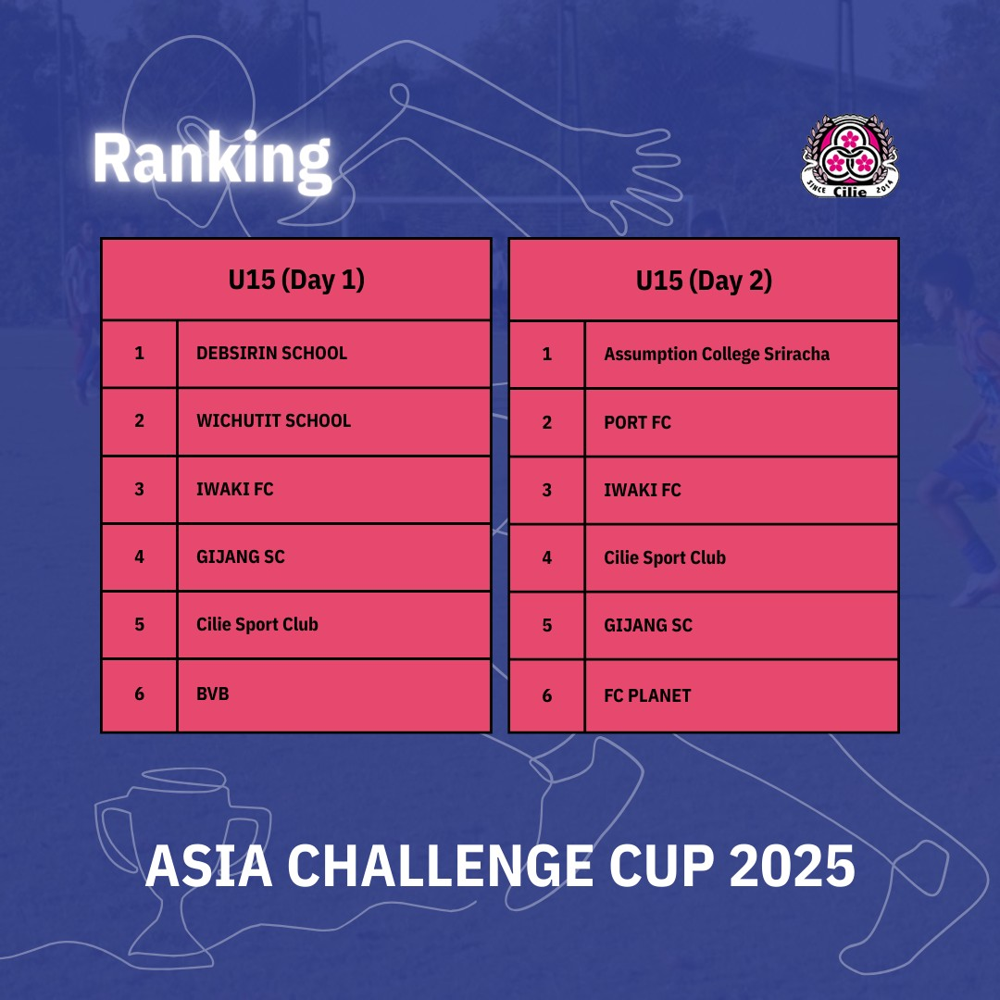

Iwaki FC JAPAN
0 — 1
Debsirin School THAILAND
The Cup
第1回から第4回まで。各大会を予選と順位トーナメントに分けて記録します。
第1回の予選は、公開された遠征レポートに基づく記録です。公式記録と異なる場合は大会本部を優先します。
順位は 公式ページ の Ranking を正とします。

Official ranking · 第1回Day 1 は2グループ・各6チームのリーグ戦。掲載は公式ページで公開されたスコアの一部です。全記録は 大阪大会ページ を参照してください。
Placement
Day 2 は1位から12位までを決める順位トーナメント。引き分けはPK、決勝のみ延長あり。
詳細な対戦表は大会本部の公開に合わせて更新します。
Qualifying
第3回大会の予選対戦表は、公開され次第この欄に掲載します。
Placement
第3回大会の順位トーナメントは、公開され次第この欄に掲載します。
Qualifying
第4回大会の予選対戦表は、公開され次第この欄に掲載します。
Placement
第4回大会の順位トーナメントは、公開され次第この欄に掲載します。